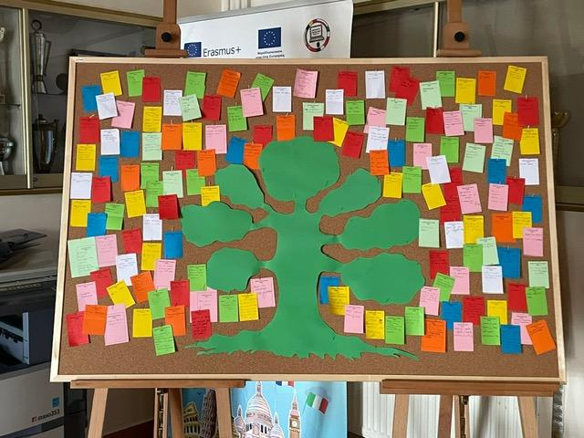
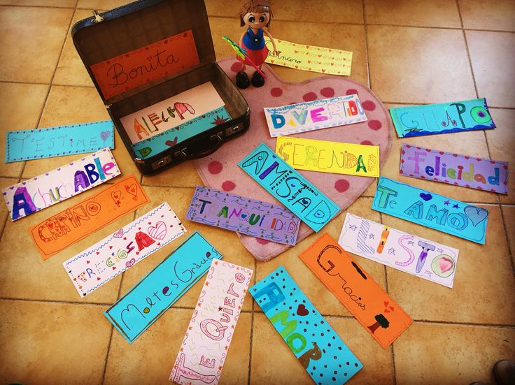
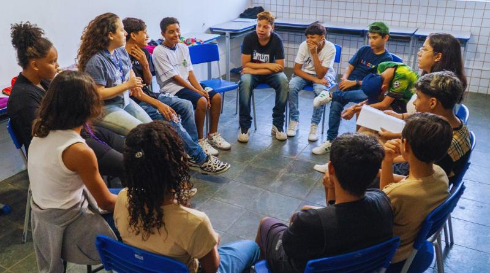
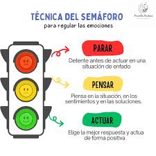
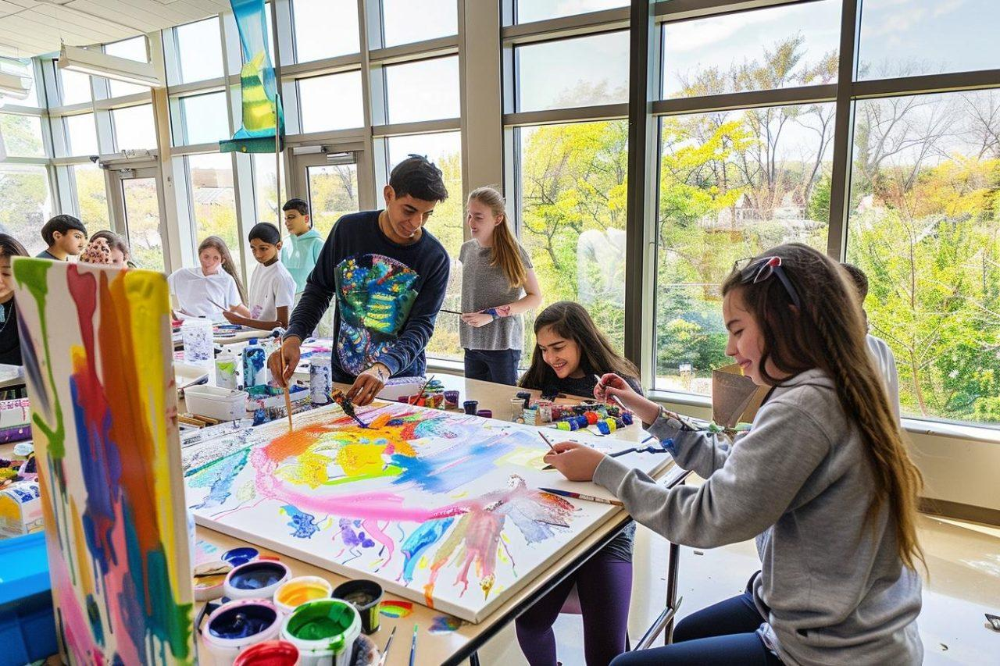
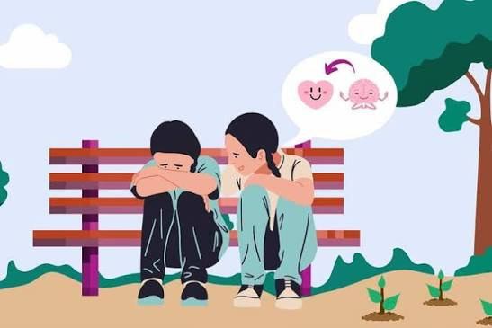
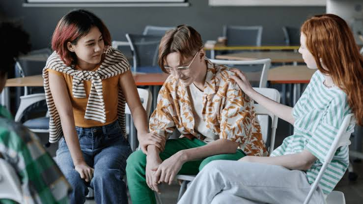
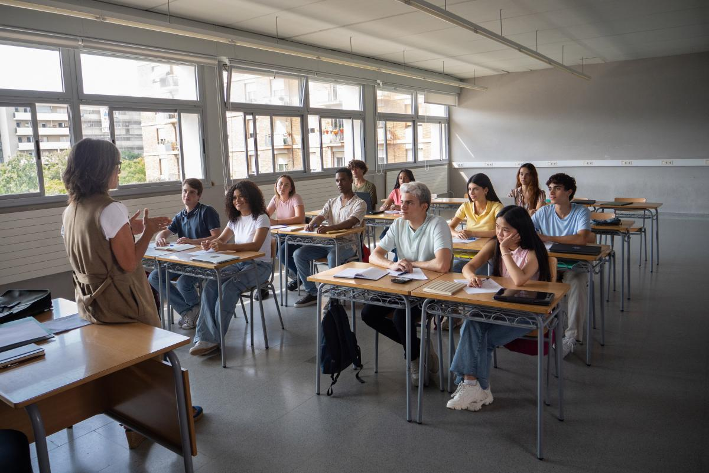

Estas actividades están pensadas para adolescentes, maestros y padres de familia.
Su objetivo es fomentar la convivencia, la confianza, el autocuidado, la empatía y el respeto por las emociones.

Objetivo: Reconocer y expresar nuestras emociones.
Materiales: Cartulina, hojas de colores, marcadores y cinta adhesiva.
¿Cómo se realiza?
1. Dibujar un árbol grande en una cartulina.
2. Entregar una hoja de papel a cada participante.
3. Escribir una emoción que hayan sentido últimamente.
4. Escribir también algo que les ayude a sentirse mejor.
5. Colocar las hojas en el árbol.
Reflexión: Todas las emociones son importantes y aprender a expresarlas nos ayuda a cuidarnos.

Objetivo: Fortalecer la autoestima y promover palabras positivas.
Materiales: Una caja, papelitos y lápices.
¿Cómo se realiza?
1. Cada participante escribe una frase positiva.
2. Coloca su papelito dentro de la caja.
3. Se mezclan los mensajes.
4. Cada persona toma uno y lo lee en voz alta.
Ejemplos:
- Eres importante.
- Tus esfuerzos valen mucho.
- No estás solo.
- Confía en tus capacidades.

¿Cómo se realiza?
1. Formar un círculo.
2. El encargado realiza preguntas sencillas.
3. Cada participante puede responder voluntariamente.
4. Los demás escuchan sin interrumpir ni juzgar.
Preguntas:
- ¿Qué actividad te hace feliz?
- ¿Qué haces cuando tienes un día difícil?
- ¿Cómo puedes ayudar a un amigo?
- ¿Qué significa para ti sentirte escuchado?

Objetivo: Aprender a reconocer nuestras emociones y responder con calma.
¿Cómo se realiza?
- Rojo
Alto: identifico lo que estoy sintiendo.
- Amarillo
Pienso: ¿qué puedo hacer para sentirme mejor?
- Verde
Actúo: elijo una respuesta respetuosa y saludable.
Los participantes pueden representar situaciones cotidianas y practicar cómo utilizar el semáforo.
Objetivo: Comprender que todos podemos brindar apoyo.
¿Cómo se realiza?
1. Entregar tiras de papel a los participantes.
2. Cada uno escribe una acción para ayudar a otra persona.
3. Unir las tiras formando una cadena.
4. Leer las acciones en grupo.
Ejemplos: Escuchar, acompañar, respetar, incluir, comprender y orientar.

Objetivo: Expresar sentimientos mediante el arte.
Materiales: Hojas, pinturas, colores y pinceles.
¿Cómo se realiza?
1. Cada participante elige colores que representen cómo se siente.
2. Realiza un dibujo libre.
3. Quien quiera puede explicar su creación.
4. Se respetan todas las expresiones artísticas.

Objetivo: Aprender a ponerse en el lugar de otras personas.
¿Cómo se realiza?
1. Formar equipos.
2. Entregar a cada equipo una situación.
3. Representarla mediante una pequeña actuación.
4. Mostrar una manera respetuosa de ayudar.
Situaciones:
- Un compañero se siente excluido.
- Una amiga está preocupada por sus calificaciones.
- Un estudiante tiene miedo de participar.
- Un compañero necesita que alguien lo escuche.
Adolescentes


15 minutos
30 minutos
Escuela
Salón de clases